← Back to the vault
the collection
Notes on every game in the vault
This page is the long version of the grid. Each note is written for a person who wants to know what they are about to open — not a keyword dump. If a title is missing here, it is not in the catalog yet.
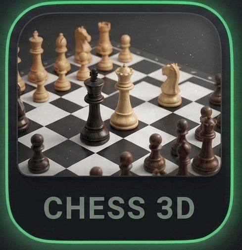
Chess
Chess 3D
Chess 3D is a full chess match in the browser with a three-dimensional board you can actually read on a small screen. Pieces move by the official rules, so it works as practice against a friend or a way to learn openings without installing an engine. The 3D view is there to make the board feel physical, not to hide information. Load it, sit down, and play a real game with no sign-in.
Play Chess 3D in the vault
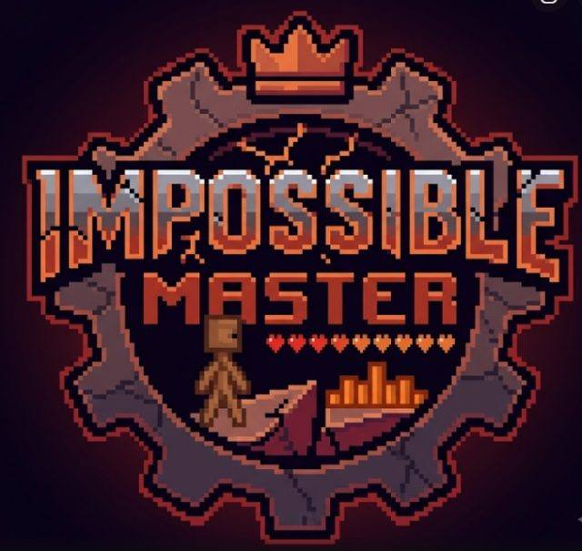
Arcade
Impossible Master
Impossible Master is a one-more-try arcade run: jump, dodge, and survive a course that gets mean on purpose. The joke is in the name, but the controls stay simple so the fail is on you, not the UI. It is the kind of browser game you reopen after dinner because the restart is instant. No accounts, no lives shop — just a hard run and a high score.
Play Impossible Master in the vault
Puzzle
Pop-a-Lock
Pop-a-Lock is a 30-second timing puzzle: you hold your nerve, hit the lock in the sweet spot, and try not to tilt when the window shrinks. It is designed as a legend-or-nothing round, not a long campaign. On a phone it is a thumb game; on a desktop it is a mouse flick. Either way you are in and out before a video ad would have finished loading.
Play Pop-a-Lock in the vault
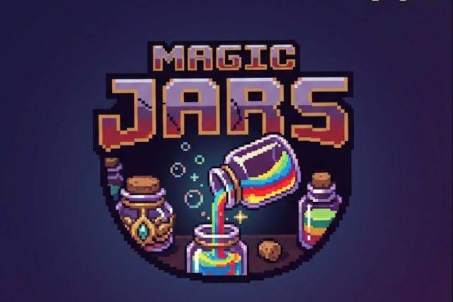
Puzzle
Magic Jars
Magic Jars is a pour-and-sort puzzle. You move colored liquids between jars until each one is clean, with just enough extra space to plan two pours ahead. It rewards patience more than speed, which makes it a good cooldown game between louder arcade titles. Everything runs in the tab — no app store, no progress wall.
Play Magic Jars in the vault
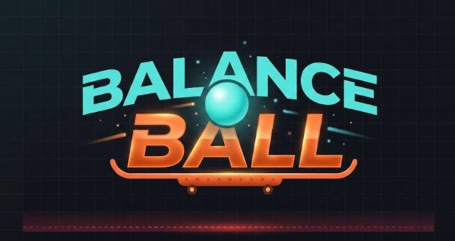
Arcade
Balance Ball
Balance Ball is a physics toy: keep the ball on the path, tilt with care, and treat every bump as your own. It is closer to a circus act than a score-chaser, and that is the point. Short stages, instant retries, and a feel you can learn in one sitting. Built for browsers so you can play it on a school Chromebook or a phone without installing anything.
Play Balance Ball in the vault
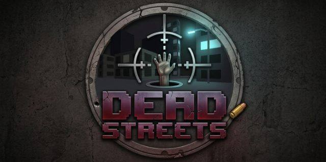
Shooting
Dead Streets
Dead Streets is a browser shooter about clearing streets of zombies without a huge install. You aim, you move, you keep the horde from wrapping you. It is a mood piece as much as a wave game — dark streets, simple guns, and a save-the-block fantasy that does not ask for an account. Play a round, close the tab, come back later.
Play Dead Streets in the vault
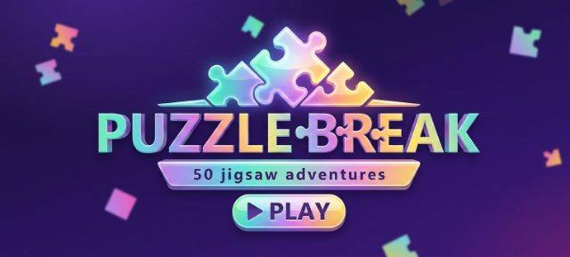
Puzzle
Puzzle Break
Puzzle Break is a jigsaw-style campaign: shatter a picture, remember the pieces, and rebuild it across dozens of colorful boards. It is slower than the arcade cabinets in this vault and that is intentional. Kids and adults can share it because the rules are obvious and the difficulty ramps instead of jumping. No download, no profile, just the next picture.
Play Puzzle Break in the vault
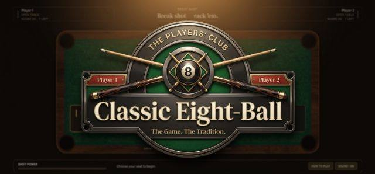
Skill
8-Ball Pool
8-Ball Pool is a table-sports game in the browser: break, aim the cue, and play a proper rack without a store listing. The felt, the rails, and the angles are the whole toy. It is meant for a quiet match, not a gacha. Load the table when you have ten minutes and want billiards that still feels like billiards.
Play 8-Ball Pool in the vault
Music
Aurora Keys
Aurora Keys is a music-leaning browser game: you hit keys in time with a glowing track and try to keep the combo alive. It is closer to a rhythm cabinet than a piano lesson. The visual language is neon on purpose so the beat is readable on a phone. No account, no song pass — open it and play the chart.
Play Aurora Keys in the vault
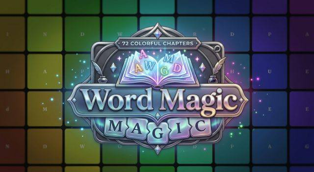
Mind
Word Magic
Word Magic is a word puzzle about building spells from letters. You look at the grid, find the word, and clear space for the next one. It is a mind game for people who like crosswords but want something that moves. It runs fully in the browser, so a parent can hand a phone over without installing a kids-app storefront.
Play Word Magic in the vault
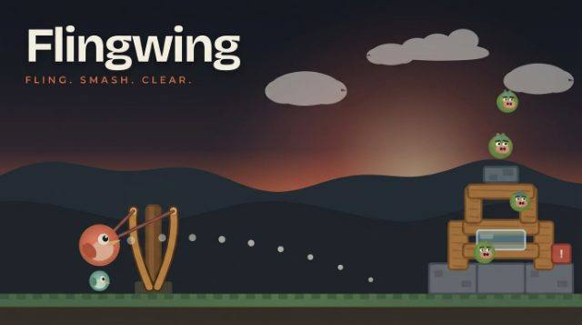
Puzzle
Flingwing
Flingwing is a physics fling: you pull back, let go, and watch the bird-like flyer ride the arc. The joke is simple; the skill is in the release. Stages are short so it works as a bus-stop game. Nothing to download, nothing to sign into, and a retry that is faster than a homepage refresh.
Play Flingwing in the vault
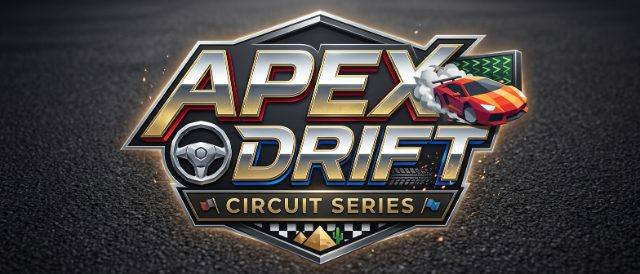
Racing
Apex Drift
Apex Drift is a circuit racer about holding a slide through the corner instead of braking like a saint. You feel the car, you clip the apex, you try not to over-rotate. It is built as a browser race so the garage is just the next run. No massive download, no season pass — just the track and the drift.
Play Apex Drift in the vault
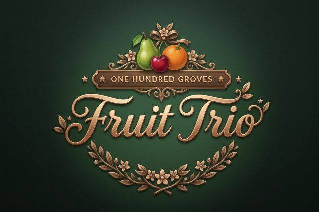
Puzzle
Fruit Trio
Fruit Trio is a matching puzzle with orchard colors and short boards. You look for threes, chain a cascade, and chase a clean clear. It is family-friendly on purpose: no chat, no ads stuffed into the board itself, no account wall. Play it in a tab, then jump to a louder game in the vault.
Play Fruit Trio in the vault
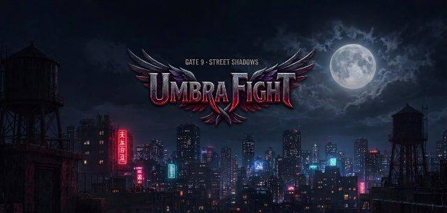
Fighting
Shadow Fight
Shadow Fight (Umbra Fight in the files) is a brawler: read the opponent, time the hit, and keep your guard up. Combos are short so a phone thumb can actually land them. It is the fighting cabinet in this library — not a 40-gig fighting game, a browser round you can finish before the kettle boils.
Play Shadow Fight in the vault
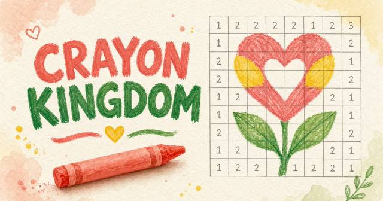
Drawing
Crazy Kingdom
Crazy Kingdom is a coloring / drawing cabinet (Crayon Kingdom) for younger players. You pick a page, fill it, and make a mess in a good way. There is no social layer and no download, which is the whole point of putting it in this vault. Hand the device over, stay in the tab, and keep the rest of the library one click away.
Play Crazy Kingdom in the vault
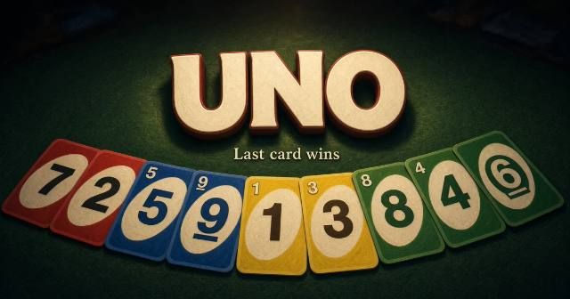
Arcade
UNO
UNO in the browser is the classic color-and-number shedding game: match the card, dump your hand, and watch the draw pile. It is here so a family can play a round without hunting a deck or an app. Rules stay close to the card game people already know. No account, no room code required for a quick sit-down.
Play UNO in the vault
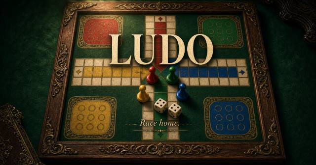
Arcade
LUDO
LUDO is the classic race-around-the-board game in a browser tab. Roll, move, send a piece home, and try not to get sent back. It is built for shared screens and short family sessions. Because it runs on offlinegames.art, you do not install a store app or make a profile just to play a race that is older than the web.
Play LUDO in the vault